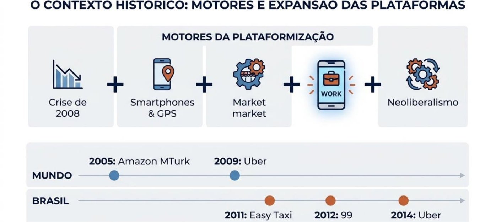
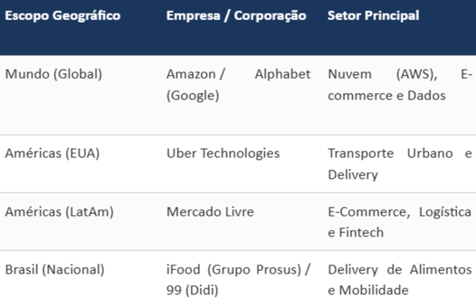
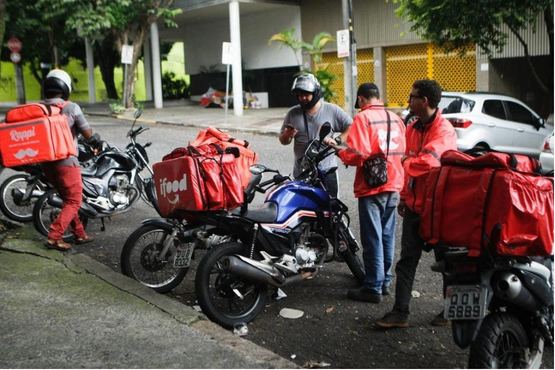
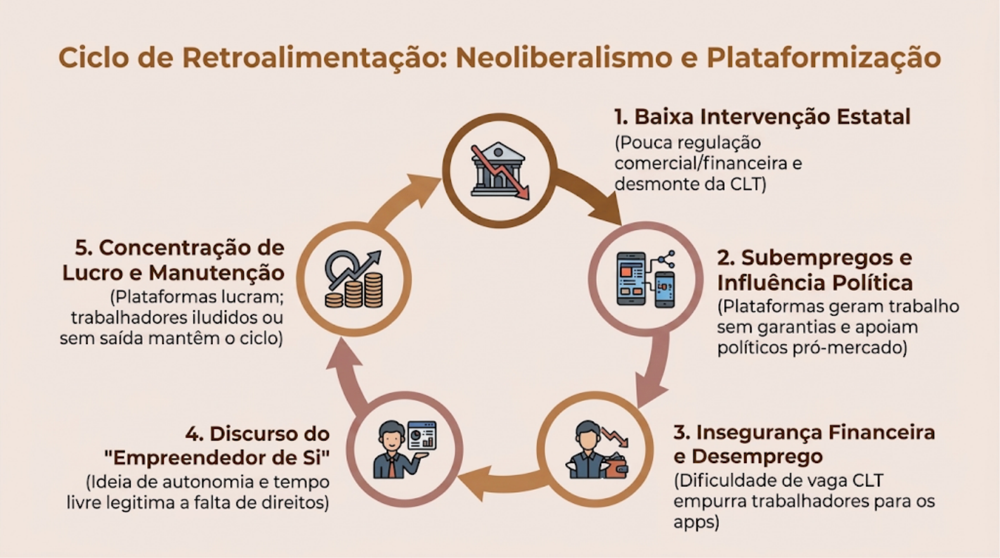

Plataformização
do trabalho
A dialética colaborador × subordinado
Filipe Santos Silva
Jessica Espírito Santo
Joana Bastos
Joyce Batista
Laine Dias
Lainne Gonçalves
Yuri Ramos
1.Plataformização: conceito, surgimento e cenário de destaque no Brasil
Helmond (2015) | Poell, Nieborg & van Dijck (2019/2020) | Rafael Grohmann (2020).
3 Dimensões: Infraestrutura de dados + Mercados multilaterais + Governança algorítmica.
É o processo em que infraestruturas digitais (aplicativos e algoritmos) passam a organizar setores inteiros da economia, o governo das relações e as práticas culturais da sociedade (Poell, Nieborg & van Dijck, 2019/2020).
1.1 Origem e Pioneiros:
- Motores: Crise de 2008 + Smartphones/GPS + Neoliberalismo.
- Mundo: Amazon MTurk (2005) e Uber (2009).
- Brasil: Easy Taxi e iFood (2011), 99 (2012), Uber (2014).

1.2 O Mito das Skills e a Colonialidade
- Ludmila Abílio (Sem Maquiagem): Precarização feminina antes dos apps.
- Vitor Filgueiras (É Tudo Novo, de Novo): Retórica da “novidade” para tirar direitos.
- Grada Kilomba (Memórias da Plantação): Reatualização colonial + Silenciamento algorítmico (85%+ de entregadores em Salvador são negros).

1.3 Trabalho Invisível e Caminhos (Rafael Grohmann):
- Fazendas de Cliques: Precarização digital.
- Manipulação algorítmica. Desinformação.
Alguns Retratos
2. Realidade do trabalhador das plataformas
Empregos mais comuns
Segundo dados do IBGE (2025), em 2024, aproximadamente 1,7 milhão de brasileiros trabalhavam por meio de aplicativos, sendo 58,3% no transporte de passageiros e 29,3% em serviços de entrega.
Por que as pessoas escolhem?
Um estudo publicado na revista Saúde e Sociedade, sobre as condições de trabalho dos entregadores de aplicativos, identificou que o desemprego foi uma das principais razões para o ingresso nessa atividade, apresentando relatos de trabalhadores que recorreram às entregas após perderem seus empregos durante a pandemia.
3.Plataformização Como Fenômeno local x Mundial.
A plataformização é a transformação das relações de trabalho por meio de plataformas digitais que conectam trabalhadores, consumidores e empresas.

- Intermediação digital: aplicativos conectam quem oferece serviços a quem os consome.
- Flexibilização: possibilidade de escolher horários e aceitar ou recusar atividades.
- Gestão algorítmica: algoritmos organizam tarefas, pagamentos, avaliações e desempenho.
- Novas relações de trabalho: crescimento de atividades mediadas por aplicativos, muitas vezes sem vínculo empregatício tradicional.

A plataformização no mundo: um fenômeno global
No Mundo do Trabalho (Uberização): As plataformas atuam como intermediárias entre clientes e prestadores de serviço. Sob o discurso de “autonomia” e “flexibilidade”, instauram-se novas formas de precarização, ausência de vínculos formais, remuneração variável e controle algorítmico da jornada.
No Jornalismo e na Informação: Os veículos de comunicação tradicionais tornam-se dependentes de redes sociais e mecanismos de busca para distribuir notícias, moldando a produção de conteúdo às regras de engajamento ditadas por algoritmos de terceiros.
Na Educação (Edtechs e Escolas): Há uma integração crescente de plataformas digitais de aprendizagem, sistemas de monitoramento e conteúdos padronizados fornecidos por empresas de tecnologia na rotina de escolas e universidades.
Um modelo global, diferentes realidades.
- Estados Unidos: expansão de empresas como Uber e Lyft, com forte presença do trabalho sob demanda.
- Europa: debates sobre direitos trabalhistas, proteção social e regulamentação das plataformas.
- China: plataformas como Meituan e Ele.me integram entregas e serviços ao cotidiano de milhões de pessoas.

A plataformização no Brasil: uma realidade próxima



Crescimento das plataformas em um cenário de desigualdade social.
4.Neoliberalismo e Plataformização
4.1 Como o Neoliberalismo Fomenta a Plataformização?
“A revolução das tecnologias de informação e comunicação não criou a precarização; ela forneceu o aparato técnico indispensável para que as políticas neoliberais de privatização, terceirização e desregulamentação alcançassem uma escala planetária e penetrassem nos espaços mais íntimos da vida cotidiana.”(HUWS, 2017, p. 318).
4.1.1. Ursula Huws - Labor in the Global Digital Economy: The Cybertariat Comes of Age (2014)
Tese Principal:
- Neoliberalismo ataca “empregos padrões” por 3 etapas, desde a década de 70.
- Aplicativos automatizam a terceirização, processos que já vinham em curso.
- Privatização e Terceirização (Outsourcing): Desmonte de departamentos fixos e contratações de terceirizadas.
- Padronização e Codificação de Tarefas: Tarefas administrativas complexas divididas em rotinas simples e mensuráveis.
- Deslocalização (Offshoring): Tarefas computadorizadas enviadas para todo o mundo, inclusive onde a mão de obra é mais barata e desregulamentada.
4.1.2. Nick Srnicek - Platform Capitalism (2017)
Tese Principal:
- Contexto: Pós crise 2008, análise monetária do Vale do Silício.
- Srnicek afirma que as plataformas são um produto da financeirização Neoliberal.
1. Capital Ocioso e Juros Baixos
- Bancos centrais mantiveram taxas de juros baixas;
- Investidores colocaram bilhões de dólares em fundos de risco no Vale do Silício.
2. Crescimento subsidiado pelo prejuízo
Capital especulativo deixa empresas operarem por anos dando prejuízo.
3. Plataformas Enxutas e Transferência de Ativos Fixos (Cap. 2)
“As plataformas enxutas operam por meio de um modelo hiperterceirizado, no qual os trabalhadores são terceirizados, o capital fixo é terceirizado, os custos de manutenção são terceirizados e o treinamento é terceirizado. Tudo o que resta é o controle da plataforma — e a extração de uma renda monopolista sobre ela.”
4.1.3. Tom Slee - What's Yours Is Mine: Against the Sharing Economy (2015)
Tese Principal: Ascensão das startups de “economia do compartilhamento” e como o neoliberalismo é um escudo político para elas.
1. Discurso Colaborativo
- Estética Hippie/Comunitária;
- Ideia que o mercado livre resolve melhor que o Estado.
2. Evasão Regulatória Deliberada
Exemplo da Uber em operação sem licenças de transporte e posterior criação da categoria de motoristas de aplicativo nos EUA.
Transferência de Risco Por Reputação
- Sistema de aprovação por estrelas substituem fiscalização estatal e contrato de trabalho.
- Nota baixa = demissão, sem indenização ou defesa.
(Pouca regulação comercial/financeira e desmonte da CLT)2. Subempregos e Influência Política
(Plataformas geram trabalho sem garantias e apoiam políticos pró-mercado)3. Insegurança Financeira e Desemprego
(Dificuldade de vaga CLT empurra trabalhadores para os apps)4. Discurso do “Empreendedor de Si”
(Ideia de autonomia e tempo livre legitima a falta de direitos)5. Concentração de Lucro e Manutenção
(Plataformas lucram; trabalhadores iludidos ou sem saída mantêm o ciclo)

4.2 Perpectiva Dentro do Sul Global
“A plataformização do trabalho não se desenvolve de maneira homogênea no mundo: no Sul Global, ela se articula diretamente com a informalidade estrutural, o racismo e as heranças coloniais, fazendo com que a extração de dados e de mais-valor alimente centros financeiros do Norte Global a partir da precarização periférica.” (GROHMANN, 2021, p. 14).
4.2. Ruy Braga - A Rebeldia do Precariado: trabalho e neoliberalismo no Sul Global (2017)
Tese Principal: Os países periféricos nunca consolidaram um Estado de Bem-Estar Social pleno nem uma sociedade salarial universal.
“Enquanto no Norte Global a precarização assume a forma de regressão de direitos conquistados no pós-guerra, na periferia capitalista ela opera como aprofundamento estrutural da informalidade, empurrando jovens trabalhadores periféricos para ocupações de alta rotatividade, baixos salários e ausência de proteção sindical.” (BRAGA, 2017, p. 114).
4.2.2. Rafael Grohmann - Os Laboratórios de Trabalho Digital (2021)
Tese Principal: A plataformização na América Latina possui 2 camadas de subordinação:
- Colonialismo de Dados
- Plataformas operam no território latino-americano utilizando mão de obra barata e desregulamentada;
- Lucros e a propriedade intelectual dos dados vão para o Norte Global.
- Apropriação da “Viração” Local
- Plataformas adaptam seus algoritmos às desigualdades locais.
5. Submissão e Exploração por Ludmila Abílio e Ricardo Antunes
Ludmila Abílio – Sem Maquiagem (2014)
Tese Principal: A uberização não nasce com os apps. Já existia na precarização das revendedoras de cosméticos e dos motoboys.
- Autogerenciamento Subordinado: O trabalhador decide o horário. A empresa decide as regras.
- Subsunção Real da Viração: O “se virar” do trabalhador passa a ser gerido pela empresa.
- Trabalhador Just-in-Time: Disponível o tempo todo, pago só pelo que produz.
Ricardo Antunes – O Privilégio da Servidão (2018)
Tese Principal: Tecnologia nova com exploração antiga: a plataforma recupera formas de trabalho sem direitos.
- Infoproletariado: A classe trabalhadora da era digital (conceito próximo ao cibertariado, de Huws).
- Privilégio da Servidão: Com o desemprego, qualquer ocupação parece favor.
- Falso “Autônomo”: Categoria criada para negar direitos.
6. Influência da Geografia Brasileira na plataformização
Milton Santos – A Natureza do Espaço (1996)
Tese Principal: O espaço não é cenário. A técnica e a informação definem quem acessa os fluxos da globalização e quem fica de fora.
- Espaços Luminosos: Densidade técnica, informacional e alto fluxo e capital.
- Espaços Opacos: Fora dos fluxos dominantes, à margem da sociedade. Ex.: Periferias de Salvador.
Verticalidades e Horizontalidades (Milton Santos)
- Verticalidades: Comando à distância. A plataforma.
- Horizontalidades: O território vivido. Rua, bairro e pontos de apoio.
- Contra-racionalidades: Resistência no território (grupos de entregadores).
Cidadania Mutilada e Salvador (Milton Santos)
“Onde não há cidadão, há o consumidor mais-do-que-perfeito.”(O Espaço do Cidadão, Milton Santos, 1987)
- O valor da pessoa depende do lugar onde ela está.
- Nordeste: +33,2% de trabalhadores por app (2022–2024) | Brasil: +25,4%.
7. Visão de Microempreendedor e Posicionamento Político
Se o trabalhador é seu próprio patrão, por que ele não tem controle sobre todas as regras do próprio trabalho?
8. Os impactos da Plataformização do trabalho na saúde dos trabalhadores.
De acordo com um relatório da Organização Internacional do Trabalho (OIT), realizado em 22 de abril deste ano, há uma correlação direta entre a flexibilização de direitos e a informalização com o aumento do adoecimento mental e físico, além de acidentes e mortalidade laboral. Segundo a pesquisa, estima-se que estes fatores estão associados a mais de 840 mil mortes anuais no mundo.
Além disso, alguns estudiosos apontam a emergência do capitalismo de plataforma, uma nova configuração do sistema capitalista em que as plataformas digitais se consolidam como modelo de negócio, utilizando tecnologias e algoritmos para organizar, gerenciar e controlar a força de trabalho, aumentando a exploração do sujeito.
a. Saúde mental:
- Exaustão: a plataformização exige uma disponibilidade total do sujeito;
- Ansiedade: poucas horas de sono e, por vezes, ausência de dias de descanso; baixa remuneração; responsabilização individual
- Vigilância Algorítmica: Pressão psicológica causada por metas, avaliações de clientes e o medo constante de bloqueios.
b. Saúde Física e Proteção Social
- Falta de Estrutura: desidratação por falta de acesso à água; falta de locais para descanso;
- Doenças cardiovasculares e transtornos mentais;
- Desamparo Social: Sem garantias trabalhistas;
- Insegurança alimentar: Recursos escassos.
c. Acidentes de trabalho sofridos por entregadores de aplicativos (motociclistas e ciclistas).
| Período | Casos Oficiais | Subnotificados (Est.) | Total Estimado |
|---|---|---|---|
| 2023 | 8.630 | ~48.900 | ~57.530 |
| 2024 | 10.034 | ~56.860 | ~66.890 |
| 2025 | 11.662 | ~66.085 | ~77.750 |
| 2026 (até jul.) | 3.885 | ~22.015 | ~25.900 |
| TOTAL | 34.211 | ~193.860 | ~228.070 |
d. Violência urbana
Quase 60% dos motoristas e entregadores de aplicativo no Brasil (59,1%) já sofreram violência ou assédio no trabalho, segundo pesquisa da GigU com a Jangada Comunicação. O estudo também aponta que 32,8% se sentem inseguros na maior parte do tempo.
9. Quem protege o trabalhador de aplicativo?
O problema:
Trabalhadores classificados como autônomos.
Ausência de direitos automáticos da CLT.
Controle das plataformas sobre pagamentos, avaliações e bloqueios.
O que está sendo discutido?
PLP 12/2024: remuneração mínima e previdência para motoristas.
Tema 1.291 – STF: discussão sobre vínculo empregatício.
PL 5.253/2026: propostas de proteção social e transparência.
9.1 O QUE PRECISA MUDAR?
Remuneração justa
Pagamentos adequados aos custos do trabalhador
Proteção social
Previdência e amparo em situações de risco.
Transparência
Clareza sobre algoritmos, pagamentos e bloqueios.
Direitos trabalhistas
Mais segurança e garantias para os profissionais.
REFERÊNCIAS
- ABÍLIO, Ludmila Costhek. Sem maquiagem: o trabalho de um milhão de revendedoras de cosméticos. São Paulo: Boitempo, 2014.
- ASSAD, Renato Beneduci. Capitalismo de plataforma: entre as novas formas de exploração e a gênese e luta de uma nova classe trabalhadora. 2023. Trabalho de Graduação – Faculdade de Filosofia, Letras e Ciências Humanas, Universidade de São Paulo, São Paulo, 2023. https://bdta.abcd.usp.br/directbitstream/a93b58ad-f8b7-4d4a-b1ad-97e49dd60411/2023_RenatoBeneduciAssad_TGI.pdf
- DIREITOS DE VERDADE. As plataformas digitais e o impacto na saúde do(a) trabalhador(a). [S. l.], [s. d.]. Disponível em: https://direitosdeverdade.com/as-plataformas-digitais-e-o-impacto-na-saude-doa-trabalhadora/.
- FILGUEIRAS, Vitor Araujo. “É tudo novo”, de novo: as narrativas sobre grandes mudanças no mundo do trabalho como ferramenta do capital. São Paulo: Boitempo, 2021.
- GROHMANN, Rafael. Plataformização do trabalho: entre a dataficação, a financeirização e a racionalidade neoliberal. Revista Eptic, v. 22, n. 1, p. 106-122, 2020.
- HELMOND, Anne. The Platformization of the Web: Making Web Data Platform Ready. Social Media + Society, v. 1, n. 2, p. 1-11, 2015. DOI: 10.1177/2056305115603080.
- INTERNATIONAL LABOUR ORGANIZATION (ILO). O ambiente psicossocial de trabalho: tendências globais e orientações para a ação. Genebra: Organização Internacional do Trabalho, 2026. Disponível em: https://brasil.un.org/pt-br/314273-oit-riscos-psicossociais-no-trabalho-s%C3%A3o-associados-mais-de-840-mil-mortes-por-ano.
- KILOMBA, Grada. Memórias da plantação: episódios de racismo cotidiano. Rio de Janeiro: Cobogó, 2019.
- Plataformização, precarização do trabalho e saúde mental: um estudo sobre motoristas plataformizados em Manaus/AM. Revista Brasileira de Iniciação Científica, v. 13, e026013, 2026. Disponível em: https://periodicoscientificos.itp.ifsp.edu.br/index.php/rbic/article/view/2602.
- ANTUNES, Ricardo. O privilégio da servidão. São Paulo: Boitempo, 2018.
- SANTOS, Milton. A natureza do espaço: técnica e tempo, razão e emoção. São Paulo: Hucitec, 1996.
- SANTOS, Milton. O espaço do cidadão. 1987.
- IBGE. PNAD Contínua 2024: trabalho por plataformas digitais.
- 1. BRASIL. Câmara dos Deputados. Projeto de Lei Complementar nº 12/2024. Disponível em: Congresso Nacional – PLP 12/2024.